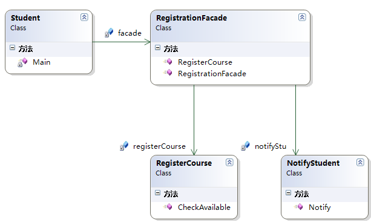

外观模式.
Facade Pattern
三层架构就是典型的外观模式.
使用了外观模式之后，客户端只依赖与外观类，从而将客户端与子系统的依赖解耦了，如果子系统发生改变，此时客户端的代码并不需要去改变。外观模式的实现核心主要是——由外观类去保存各个子系统的引用，实现由一个统一的外观类去包装多个子系统类，然而客户端只需要引用这个外观类，然后由外观类来调用各个子系统中的方法。然而这样的实现方式非常类似适配器模式，然而外观模式与适配器模式不同的是：适配器模式是将一个对象包装起来以改变其接口，而外观是将一群对象 ”包装“起来以简化其接口。它们的意图是不一样的，适配器是将接口转换为不同接口，而外观模式是提供一个统一的接口来简化接口。
